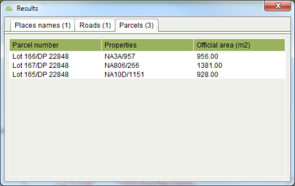

The Information Tool can be used to query geospatial features
such as parcels, roads, villages, etc. As geospatial features are often in close
proximity or overlap, the Information Tool displays details for all features immediately
surrounding the selected location. Click the appropriate tab to see details for the
various layer features.
Information Tool can be used to query geospatial features
such as parcels, roads, villages, etc. As geospatial features are often in close
proximity or overlap, the Information Tool displays details for all features immediately
surrounding the selected location. Click the appropriate tab to see details for the
various layer features.

Information Tool Results
Note that the tabs and the details displayed by the Information Tool can be reconfigured to match those required by the land administration agency.